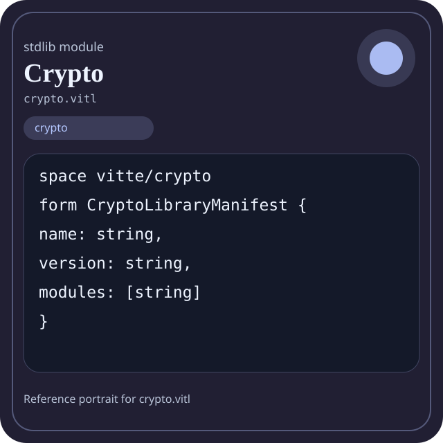

Stdlib module crypto.vitl
This page is a wiki-style reference for one concrete stdlib file. It explains what the file owns, where it fits in the family, and how to decide whether this is the right surface to depend on.

crypto.vitl.Family: crypto
Kind: public stdlib surface
Page style: this reference follows the same “encyclopedic card + portrait + usage contract” logic as the keyword pages, but for stdlib modules.
Summary
- Overview
- Purpose
- Taxonomy
- Implementation profile
- Top-level API inventory
- Position in family
- Declaration map
- Representative signatures
- How to use this module
- User example
- Keyword coverage
- Source shape
- Source landmarks
- Source organization
- Complete API catalog
- Integration boundaries
- Composition guidance
- Relationship table
- Neighbor modules
Overview
| Field | Value |
|---|---|
| Path | crypto.vitl |
| Family | crypto |
| Kind | public stdlib surface |
| Line count | 293 |
| Declared procedures | 44 |
| Declared forms/picks | 6 |
`crypto.vitl` is a public stdlib surface inside the `crypto` family. It should be read as one focused slice of the broader family responsibility: Hashing, HMAC, randomness, key derivation, symmetric primitives, and asymmetric primitives.
Purpose
This file should be chosen because of responsibility, not because its name “sounds close enough”. Inside the crypto family, it carries one focused part of the contract and keeps that responsibility separate from neighboring concerns.
- A package manifest can be serialized first, then hashed, then optionally signed.
- A token flow can derive a key in one boundary and use it in another without mixing concerns.
Taxonomy
Think of this page as a generated encyclopedia entry rather than a hand-written tutorial. The goal is to show what kind of module this is, how dense it is, and what reading strategy makes sense before depending on it.
- Large algorithm surface: this file exposes many procedures and likely acts as a domain toolkit rather than a single thin wrapper.
- Owns domain vocabulary: the module declares data shapes in addition to executable helpers, so its types are part of the contract.
- Has tuning constants: part of the module behavior is controlled by named constants that document default precision, limits, or policy.
- Minimal top-level dependencies: the module reads as mostly self-contained from its opening declarations.
- Explicit export surface: the file ends with visible export declarations instead of relying only on implicit namespace discovery.
Implementation profile
This profile is inferred directly from the source text. It does not replace reading the file, but it tells you quickly whether the module is mostly declarative, loop-heavy, branch-heavy, or organized around many small exits.
| Signal | Count | What it suggests |
|---|---|---|
if | 0 | Branching density and local decision-making. |
while | 0 | Loop-heavy or iterative implementation style. |
for | 1 | Collection-style traversal at source level. |
match | 0 | Variant-driven branching or grammar-style decoding. |
let | 1 | Local state and intermediate value density. |
give | 44 | Number of explicit exit points and result shaping. |
Top-level API inventory
| Surface | Items |
|---|---|
| Procedures | crypto_version, crypto_name, crypto_modules, crypto_module_count, crypto_manifest, crypto_ready, crypto_health, crypto_summary, crypto_report, md5, md5_hex, sha1 |
| Forms | CryptoLibraryManifest, CryptoLibraryHealth, CryptoLibrarySummary, CryptoLibraryReport, Hash, HMAC |
| Picks | none declared at top level |
| Constants | SHA1_DIGEST_SIZE, SHA256_DIGEST_SIZE, SHA512_DIGEST_SIZE, AES_ECB, AES_CBC, AES_CTR, AES_GCM, AES_128, AES_192, AES_256 |
| Exports | * |
Imported surfaces
This file does not advertise a top-level `use` surface in its opening declarations. That often means it is either self-contained or an aggregation layer.
Position in family
This file is module 1 of 9 in the crypto family when ordered by path. By procedure count it ranks 1, and by line count it ranks 1. Those ranks are useful as rough signals of breadth, not as quality judgments.
Declaration map
The declaration map turns raw source into a scan-friendly catalog. It is useful when the file is large enough that a reader wants to orient by kinds of surfaces first.
| Line | Name | Kind | Role |
|---|---|---|---|
| 1 | vitte/crypto | space | Declares the namespace that anchors this file in the stdlib tree. |
| 9 | CryptoLibraryManifest | form | Introduces a structured data shape that other procedures can exchange. |
| 15 | CryptoLibraryHealth | form | Introduces a structured data shape that other procedures can exchange. |
| 25 | CryptoLibrarySummary | form | Introduces a structured data shape that other procedures can exchange. |
| 30 | CryptoLibraryReport | form | Introduces a structured data shape that other procedures can exchange. |
| 36 | SHA1_DIGEST_SIZE | const | Defines a named constant reused across the module. |
| 37 | SHA256_DIGEST_SIZE | const | Defines a named constant reused across the module. |
| 38 | SHA512_DIGEST_SIZE | const | Defines a named constant reused across the module. |
| 41 | AES_ECB | const | Defines a named constant reused across the module. |
| 42 | AES_CBC | const | Defines a named constant reused across the module. |
| 43 | AES_CTR | const | Defines a named constant reused across the module. |
| 44 | AES_GCM | const | Defines a named constant reused across the module. |
| 47 | AES_128 | const | Defines a named constant reused across the module. |
| 48 | AES_192 | const | Defines a named constant reused across the module. |
| 49 | AES_256 | const | Defines a named constant reused across the module. |
| 51 | Hash | form | Introduces a structured data shape that other procedures can exchange. |
| 58 | HMAC | form | Introduces a structured data shape that other procedures can exchange. |
| 65 | crypto_version | proc | Represents one top-level surface in the file contract and should be read as part of the module boundary. |
| 69 | crypto_name | proc | Represents one top-level surface in the file contract and should be read as part of the module boundary. |
| 73 | crypto_modules | proc | Represents one top-level surface in the file contract and should be read as part of the module boundary. |
| 83 | crypto_module_count | proc | Represents one top-level surface in the file contract and should be read as part of the module boundary. |
| 87 | crypto_manifest | proc | Represents one top-level surface in the file contract and should be read as part of the module boundary. |
| 95 | crypto_ready | proc | Represents one top-level surface in the file contract and should be read as part of the module boundary. |
| 99 | crypto_health | proc | Represents one top-level surface in the file contract and should be read as part of the module boundary. |
| 111 | crypto_summary | proc | Represents one top-level surface in the file contract and should be read as part of the module boundary. |
| 118 | crypto_report | proc | Represents one top-level surface in the file contract and should be read as part of the module boundary. |
| 127 | md5 | proc | Represents one top-level surface in the file contract and should be read as part of the module boundary. |
| 131 | md5_hex | proc | Represents one top-level surface in the file contract and should be read as part of the module boundary. |
| 136 | sha1 | proc | Represents one top-level surface in the file contract and should be read as part of the module boundary. |
| 140 | sha1_hex | proc | Represents one top-level surface in the file contract and should be read as part of the module boundary. |
| 145 | sha256 | proc | Represents one top-level surface in the file contract and should be read as part of the module boundary. |
| 149 | sha256_hex | proc | Represents one top-level surface in the file contract and should be read as part of the module boundary. |
| 154 | sha512 | proc | Represents one top-level surface in the file contract and should be read as part of the module boundary. |
| 158 | sha512_hex | proc | Represents one top-level surface in the file contract and should be read as part of the module boundary. |
| 163 | sha3_256 | proc | Represents one top-level surface in the file contract and should be read as part of the module boundary. |
| 167 | sha3_256_hex | proc | Represents one top-level surface in the file contract and should be read as part of the module boundary. |
| 172 | sha3_512 | proc | Represents one top-level surface in the file contract and should be read as part of the module boundary. |
| 176 | sha3_512_hex | proc | Represents one top-level surface in the file contract and should be read as part of the module boundary. |
| 181 | blake2b | proc | Represents one top-level surface in the file contract and should be read as part of the module boundary. |
| 185 | blake2b_hex | proc | Represents one top-level surface in the file contract and should be read as part of the module boundary. |
| 190 | hash_new | proc | Implements a security-sensitive transformation in the crypto boundary. |
| 199 | hash_update | proc | Implements a security-sensitive transformation in the crypto boundary. |
| 203 | hash_final | proc | Implements a security-sensitive transformation in the crypto boundary. |
| 207 | hash_final_hex | proc | Implements a security-sensitive transformation in the crypto boundary. |
| 212 | hmac_new | proc | Implements a security-sensitive transformation in the crypto boundary. |
| 221 | hmac_update | proc | Implements a security-sensitive transformation in the crypto boundary. |
| 225 | hmac_final | proc | Implements a security-sensitive transformation in the crypto boundary. |
| 229 | hmac_final_hex | proc | Implements a security-sensitive transformation in the crypto boundary. |
| 234 | hash_compare | proc | Implements a security-sensitive transformation in the crypto boundary. |
| 238 | hash_file | proc | Implements a security-sensitive transformation in the crypto boundary. |
| 242 | hash_file_hex | proc | Implements a security-sensitive transformation in the crypto boundary. |
| 247 | random_bytes | proc | Implements a security-sensitive transformation in the crypto boundary. |
| 251 | random_bytes_hex | proc | Implements a security-sensitive transformation in the crypto boundary. |
| 256 | pbkdf2 | proc | Represents one top-level surface in the file contract and should be read as part of the module boundary. |
| 260 | bcrypt_hash | proc | Implements a security-sensitive transformation in the crypto boundary. |
| 264 | bcrypt_verify | proc | Represents one top-level surface in the file contract and should be read as part of the module boundary. |
| 269 | crypt_encode_base64 | proc | Turns internal values into a transport or textual representation. |
| 273 | crypt_decode_base64 | proc | Transforms an input representation into a structured internal value. |
| 277 | crypt_encode_hex | proc | Turns internal values into a transport or textual representation. |
| 281 | crypt_decode_hex | proc | Transforms an input representation into a structured internal value. |
| 285 | crypto_selftest | proc | Represents one top-level surface in the file contract and should be read as part of the module boundary. |
The table is exhaustive for top-level declarations of the selected kinds. This file declares 61 matching surfaces.
Representative signatures
These signatures are shown in source order so the page keeps the feel of a reference manual, not just a keyword cloud.
form CryptoLibraryManifest {(line 9)form CryptoLibraryHealth {(line 15)form CryptoLibrarySummary {(line 25)form CryptoLibraryReport {(line 30)const SHA1_DIGEST_SIZE: i32 = 20(line 36)const SHA256_DIGEST_SIZE: i32 = 32(line 37)const SHA512_DIGEST_SIZE: i32 = 64(line 38)const AES_ECB: i32 = 1(line 41)const AES_CBC: i32 = 2(line 42)const AES_CTR: i32 = 3(line 43)const AES_GCM: i32 = 4(line 44)const AES_128: i32 = 16(line 47)const AES_192: i32 = 24(line 48)const AES_256: i32 = 32(line 49)form Hash {(line 51)form HMAC {(line 58)proc crypto_version() -> string {(line 65)proc crypto_name() -> string {(line 69)
The list is intentionally capped here; the source file declares 60 matching signatures in total.
How to use this module
Start by reading the file as an ownership boundary. Ask three questions: what enters this module, what stable types or procedures it exports, and what adjacent module should stay outside of it.
- Read
spaceand top-level imports first so the ownership boundary ofcrypto.vitlis explicit. - Scan constants before procedures; they often encode precision, limits, or policy assumptions that explain later behavior.
- Read declared forms and picks before algorithms so the data vocabulary is stable in your head.
- Traverse procedures in source order; the early helpers usually explain the naming and numeric conventions used later.
- Use the source landmarks section below as a table of contents when the file is large.
User example
This example is generated from the actual stdlib module surface. Its job is not to be the smallest snippet possible; its job is to show a realistic consumer-shaped file that exercises the module and mirrors the language keywords the module itself relies on.
space demo/crypto
const SAMPLE_LABEL: string = "demo"
form UserReport {
label: string,
ready: bool
}
proc run_example() -> UserReport {
let entries = crypto_modules()
let ready: bool = crypto_ready()
let stable: bool = ready and true
for sample in [1] {
let seen: int = sample
}
give UserReport { label: "ok", ready: true }
}
export run_exampleKeyword coverage
This table makes the “all keywords of the module” requirement auditable. It compares the detected Vitte keywords in the source file with the generated consumer example above.
| Keyword | Present in module source | Used in generated user example |
|---|---|---|
space | yes | yes |
const | yes | yes |
form | yes | yes |
proc | yes | yes |
let | yes | yes |
for | yes | yes |
give | yes | yes |
export | yes | yes |
true | yes | yes |
and | yes | yes |
The generated snippet exercises every detected Vitte keyword used by this module.
Source shape
space vitte/crypto
form CryptoLibraryManifest {
name: string,
version: string,
modules: [string]
}
form CryptoLibraryHealth {
ready: bool,
module_count: i32,
hash_ready: bool,The excerpt is not meant to replace the file. It exists to make the module recognizable at first glance, the same way a Wikipedia infobox helps the reader orient before reading the whole article.
Source landmarks
Large files are easier to retain when they have visible landmarks. When the source contains explicit section banners, they are surfaced here; otherwise the first major declarations are used as anchors.
- Cryptography and Hashing Library / MD5, SHA variants, encryption basics
Source organization
When a file carries its own internal chaptering, those chapters usually reveal the intended reading order better than a flat symbol list. This section reconstructs that organization from the source itself.
Opening declarations
Top-level items: 1. Procedures: 0. Data surfaces: 0. Constants: 0.
First visible names: vitte/crypto
Cryptography and Hashing Library / MD5, SHA variants, encryption basics
Top-level items: 61. Procedures: 44. Data surfaces: 6. Constants: 10.
First visible names: CryptoLibraryManifest, CryptoLibraryHealth, CryptoLibrarySummary, CryptoLibraryReport, SHA1_DIGEST_SIZE, SHA256_DIGEST_SIZE, SHA512_DIGEST_SIZE, AES_ECB, AES_CBC, AES_CTR
Complete API catalog
This catalog is the exhaustive file-level index for the module. It is intentionally closer to a generated encyclopedia appendix than to a tutorial summary.
Constants
| Line | Name | Signature | Role |
|---|---|---|---|
| 36 | SHA1_DIGEST_SIZE | const SHA1_DIGEST_SIZE: i32 = 20 | Defines a named constant reused across the module. |
| 37 | SHA256_DIGEST_SIZE | const SHA256_DIGEST_SIZE: i32 = 32 | Defines a named constant reused across the module. |
| 38 | SHA512_DIGEST_SIZE | const SHA512_DIGEST_SIZE: i32 = 64 | Defines a named constant reused across the module. |
| 41 | AES_ECB | const AES_ECB: i32 = 1 | Defines a named constant reused across the module. |
| 42 | AES_CBC | const AES_CBC: i32 = 2 | Defines a named constant reused across the module. |
| 43 | AES_CTR | const AES_CTR: i32 = 3 | Defines a named constant reused across the module. |
| 44 | AES_GCM | const AES_GCM: i32 = 4 | Defines a named constant reused across the module. |
| 47 | AES_128 | const AES_128: i32 = 16 | Defines a named constant reused across the module. |
| 48 | AES_192 | const AES_192: i32 = 24 | Defines a named constant reused across the module. |
| 49 | AES_256 | const AES_256: i32 = 32 | Defines a named constant reused across the module. |
Data surfaces
| Line | Name | Signature | Role |
|---|---|---|---|
| 9 | CryptoLibraryManifest | form CryptoLibraryManifest { | Introduces a structured data shape that other procedures can exchange. |
| 15 | CryptoLibraryHealth | form CryptoLibraryHealth { | Introduces a structured data shape that other procedures can exchange. |
| 25 | CryptoLibrarySummary | form CryptoLibrarySummary { | Introduces a structured data shape that other procedures can exchange. |
| 30 | CryptoLibraryReport | form CryptoLibraryReport { | Introduces a structured data shape that other procedures can exchange. |
| 51 | Hash | form Hash { | Introduces a structured data shape that other procedures can exchange. |
| 58 | HMAC | form HMAC { | Introduces a structured data shape that other procedures can exchange. |
Procedures
| Line | Name | Signature | Role |
|---|---|---|---|
| 65 | crypto_version | proc crypto_version() -> string { | Represents one top-level surface in the file contract and should be read as part of the module boundary. |
| 69 | crypto_name | proc crypto_name() -> string { | Represents one top-level surface in the file contract and should be read as part of the module boundary. |
| 73 | crypto_modules | proc crypto_modules() -> [string] { | Represents one top-level surface in the file contract and should be read as part of the module boundary. |
| 83 | crypto_module_count | proc crypto_module_count() -> i32 { | Represents one top-level surface in the file contract and should be read as part of the module boundary. |
| 87 | crypto_manifest | proc crypto_manifest() -> CryptoLibraryManifest { | Represents one top-level surface in the file contract and should be read as part of the module boundary. |
| 95 | crypto_ready | proc crypto_ready() -> bool { | Represents one top-level surface in the file contract and should be read as part of the module boundary. |
| 99 | crypto_health | proc crypto_health() -> CryptoLibraryHealth { | Represents one top-level surface in the file contract and should be read as part of the module boundary. |
| 111 | crypto_summary | proc crypto_summary() -> CryptoLibrarySummary { | Represents one top-level surface in the file contract and should be read as part of the module boundary. |
| 118 | crypto_report | proc crypto_report() -> CryptoLibraryReport { | Represents one top-level surface in the file contract and should be read as part of the module boundary. |
| 127 | md5 | proc md5(data: string) -> string { | Represents one top-level surface in the file contract and should be read as part of the module boundary. |
| 131 | md5_hex | proc md5_hex(data: string) -> string { | Represents one top-level surface in the file contract and should be read as part of the module boundary. |
| 136 | sha1 | proc sha1(data: string) -> string { | Represents one top-level surface in the file contract and should be read as part of the module boundary. |
| 140 | sha1_hex | proc sha1_hex(data: string) -> string { | Represents one top-level surface in the file contract and should be read as part of the module boundary. |
| 145 | sha256 | proc sha256(data: string) -> string { | Represents one top-level surface in the file contract and should be read as part of the module boundary. |
| 149 | sha256_hex | proc sha256_hex(data: string) -> string { | Represents one top-level surface in the file contract and should be read as part of the module boundary. |
| 154 | sha512 | proc sha512(data: string) -> string { | Represents one top-level surface in the file contract and should be read as part of the module boundary. |
| 158 | sha512_hex | proc sha512_hex(data: string) -> string { | Represents one top-level surface in the file contract and should be read as part of the module boundary. |
| 163 | sha3_256 | proc sha3_256(data: string) -> string { | Represents one top-level surface in the file contract and should be read as part of the module boundary. |
| 167 | sha3_256_hex | proc sha3_256_hex(data: string) -> string { | Represents one top-level surface in the file contract and should be read as part of the module boundary. |
| 172 | sha3_512 | proc sha3_512(data: string) -> string { | Represents one top-level surface in the file contract and should be read as part of the module boundary. |
| 176 | sha3_512_hex | proc sha3_512_hex(data: string) -> string { | Represents one top-level surface in the file contract and should be read as part of the module boundary. |
| 181 | blake2b | proc blake2b(data: string, size: i32) -> string { | Represents one top-level surface in the file contract and should be read as part of the module boundary. |
| 185 | blake2b_hex | proc blake2b_hex(data: string, size: i32) -> string { | Represents one top-level surface in the file contract and should be read as part of the module boundary. |
| 190 | hash_new | proc hash_new(algorithm: i32) -> Hash { | Implements a security-sensitive transformation in the crypto boundary. |
| 199 | hash_update | proc hash_update(h: Hash, data: string) -> int { | Implements a security-sensitive transformation in the crypto boundary. |
| 203 | hash_final | proc hash_final(h: Hash) -> string { | Implements a security-sensitive transformation in the crypto boundary. |
| 207 | hash_final_hex | proc hash_final_hex(h: Hash) -> string { | Implements a security-sensitive transformation in the crypto boundary. |
| 212 | hmac_new | proc hmac_new(algorithm: i32, key: string) -> HMAC { | Implements a security-sensitive transformation in the crypto boundary. |
| 221 | hmac_update | proc hmac_update(h: HMAC, data: string) -> int { | Implements a security-sensitive transformation in the crypto boundary. |
| 225 | hmac_final | proc hmac_final(h: HMAC) -> string { | Implements a security-sensitive transformation in the crypto boundary. |
| 229 | hmac_final_hex | proc hmac_final_hex(h: HMAC) -> string { | Implements a security-sensitive transformation in the crypto boundary. |
| 234 | hash_compare | proc hash_compare(hash1: string, hash2: string) -> int { | Implements a security-sensitive transformation in the crypto boundary. |
| 238 | hash_file | proc hash_file(filepath: string, algorithm: i32) -> string { | Implements a security-sensitive transformation in the crypto boundary. |
| 242 | hash_file_hex | proc hash_file_hex(filepath: string, algorithm: i32) -> string { | Implements a security-sensitive transformation in the crypto boundary. |
| 247 | random_bytes | proc random_bytes(size: i32) -> string { | Implements a security-sensitive transformation in the crypto boundary. |
| 251 | random_bytes_hex | proc random_bytes_hex(size: i32) -> string { | Implements a security-sensitive transformation in the crypto boundary. |
| 256 | pbkdf2 | proc pbkdf2(password: string, salt: string, iterations: i32, length: i32) -> string { | Represents one top-level surface in the file contract and should be read as part of the module boundary. |
| 260 | bcrypt_hash | proc bcrypt_hash(password: string, rounds: i32) -> string { | Implements a security-sensitive transformation in the crypto boundary. |
| 264 | bcrypt_verify | proc bcrypt_verify(password: string, hash: string) -> int { | Represents one top-level surface in the file contract and should be read as part of the module boundary. |
| 269 | crypt_encode_base64 | proc crypt_encode_base64(data: string) -> string { | Turns internal values into a transport or textual representation. |
| 273 | crypt_decode_base64 | proc crypt_decode_base64(data: string) -> string { | Transforms an input representation into a structured internal value. |
| 277 | crypt_encode_hex | proc crypt_encode_hex(data: string) -> string { | Turns internal values into a transport or textual representation. |
| 281 | crypt_decode_hex | proc crypt_decode_hex(data: string) -> string { | Transforms an input representation into a structured internal value. |
| 285 | crypto_selftest | proc crypto_selftest() -> bool { | Represents one top-level surface in the file contract and should be read as part of the module boundary. |
Exports
| Line | Name | Signature | Role |
|---|---|---|---|
| 293 | * | export * | Re-exports surfaces that the module wants to expose as part of its public boundary. |
Integration boundaries
Within crypto, this file should remain focused. If a future helper changes the host boundary, scheduling boundary, or data-shape boundary, it probably belongs in a neighbor module instead of being added here by convenience.
- Family responsibility: Hashing, HMAC, randomness, key derivation, symmetric primitives, and asymmetric primitives.
- Family architecture role: Use `crypto` when integrity, secrecy, or key management is the feature. This family should never be presented as generic formatting or utility code.
Composition guidance
Choose this module when
- Choose
crypto.vitlwhen the main question is owned by this module rather than by transport, storage, orchestration, or user-interface code. - A package manifest can be serialized first, then hashed, then optionally signed.
- A token flow can derive a key in one boundary and use it in another without mixing concerns.
Pause before extending it when
- Avoid extending this file when the new helper mostly changes the boundary to host I/O, runtime coordination, or foreign integration instead of staying inside
crypto. - Check nearby modules such as
crypto/asymmetric.vitl,crypto/hash.vitl,crypto/hashing.vitlbefore adding convenience wrappers here.
Relationship table
This table keeps the page closer to a real encyclopedia entry: a module is easier to understand when compared with its nearest alternatives in the same family.
| Neighbor | Procedures | Data surfaces | Why compare it |
|---|---|---|---|
crypto/asymmetric.vitl | 10 | 0 | Shares the same family boundary but carries a distinct slice of responsibility. |
crypto/hash.vitl | 22 | 2 | Shares the same family boundary but carries a distinct slice of responsibility. |
crypto/hashing.vitl | 10 | 0 | Shares the same family boundary but carries a distinct slice of responsibility. |
crypto/hmac.vitl | 8 | 2 | Shares the same family boundary but carries a distinct slice of responsibility. |
crypto/keyderivation.vitl | 7 | 1 | Shares the same family boundary but carries a distinct slice of responsibility. |
crypto/random.vitl | 13 | 1 | Shares the same family boundary but carries a distinct slice of responsibility. |
crypto/symmetric.vitl | 10 | 0 | Shares the same family boundary but carries a distinct slice of responsibility. |
crypto/utils.vitl | 11 | 1 | Shares the same family boundary but carries a distinct slice of responsibility. |